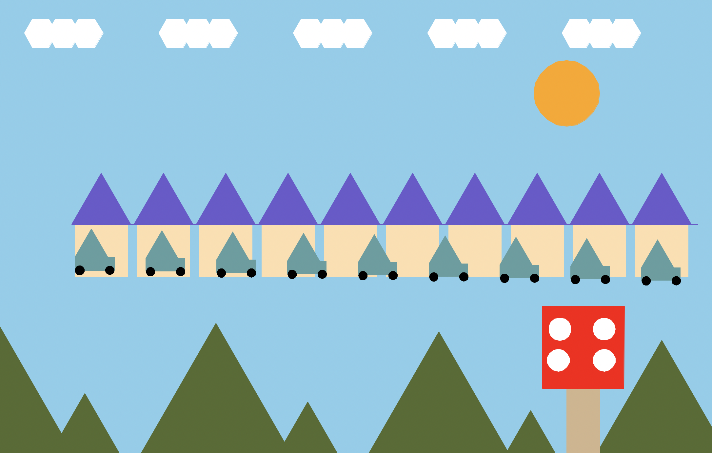
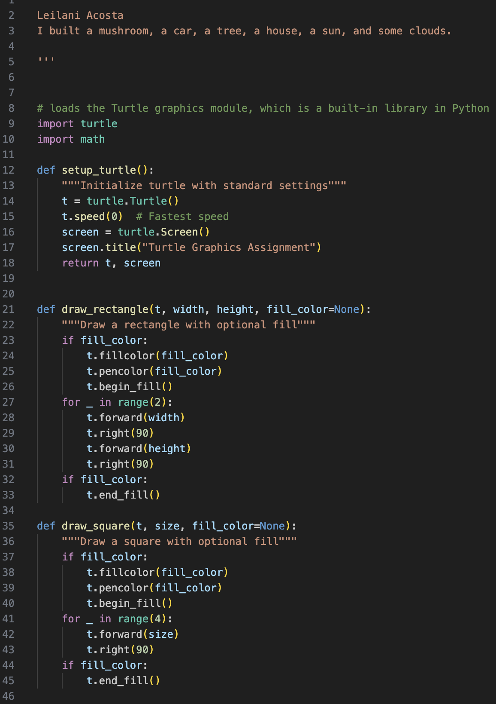
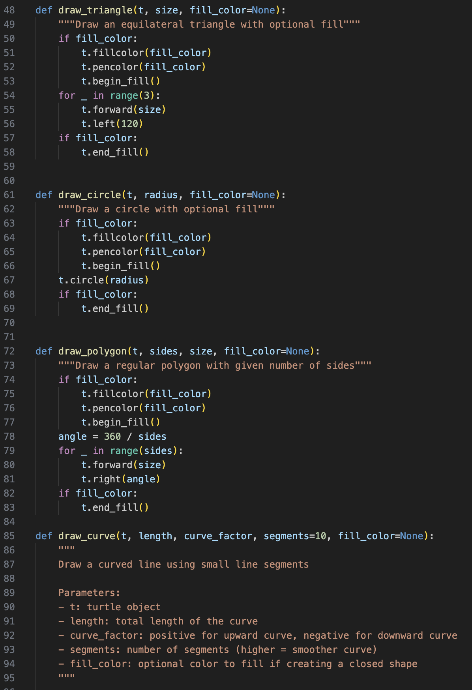
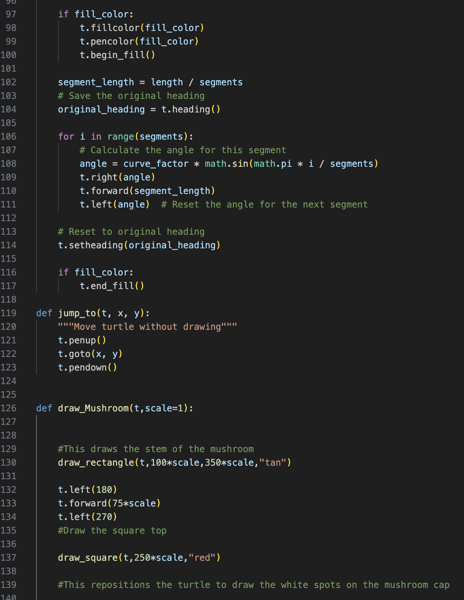
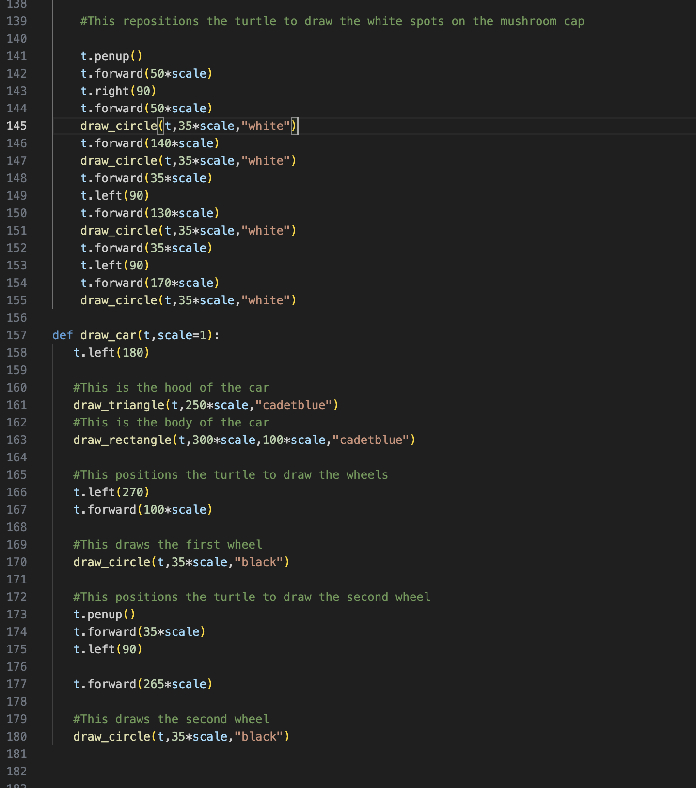
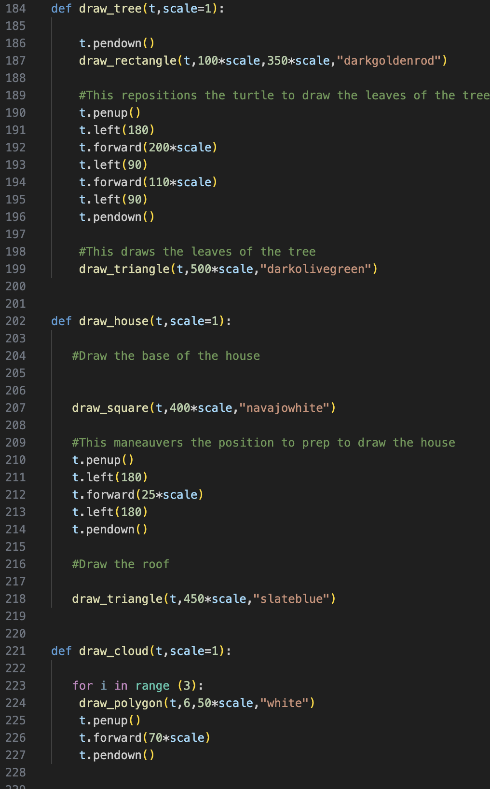
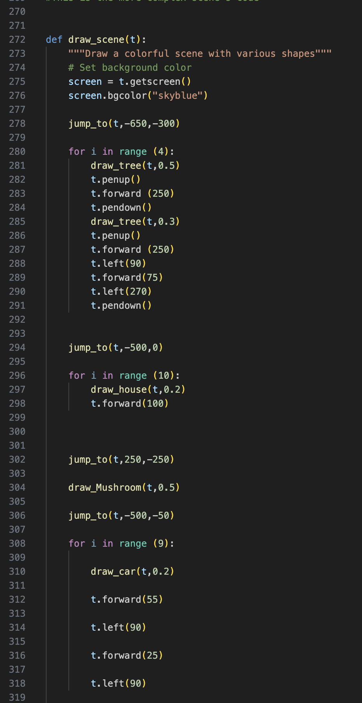
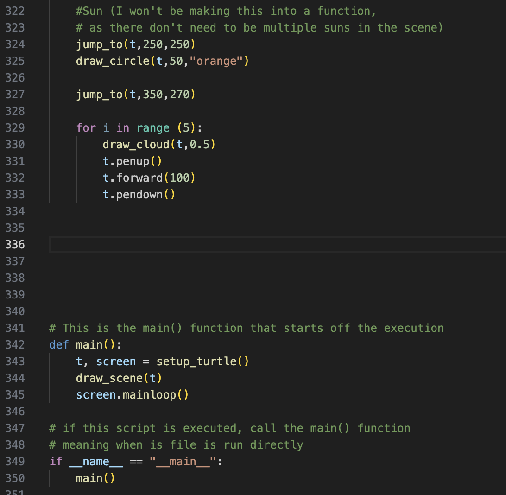

This was my biggest project on turtle. I took advantage of the previous project, and built on top of the code to make something new! I found that I had a lot of complex steps in my work, so adjusting the size was centered on adjusting scale.

This uses a lot of the same code as before, but I am still proud of my ability to utilize and tweak my work. A less major improvement, but still my favorite, was how I managed to adjust the pen color.






